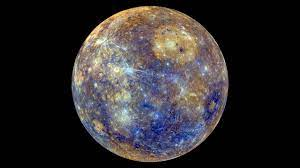
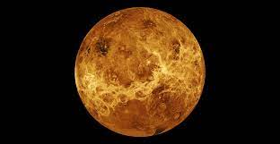
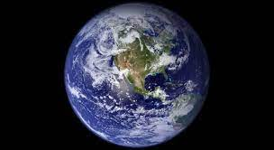
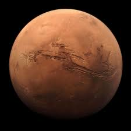

| Mercury | Venus | Earth | Mars | |
|---|---|---|---|---|
| Images of Planets |  |  |  |  |
| Mass (10^26 kg) | 0.330 | 4.87 | 5.97 | 0.642 |
| Diameter (km) | 4879 | 12,104 | 12,756 | 6,792 |
| Orbital Period (days) | 88.0 | 224.7 | 365.2 | 687.0 |
| Orbital Velocity (km/s) | 47.4 | 35.0 | 29.8 | 24.1 |
| Orbital Eccentricity | 0.206 | 0.007 | 0.017 | 0.094 |
| Obliquity to Orbit (degrees) | 0.034 | 177.4 | 23.4 | 25.2 |
| Mean Temperature | 167 | 464 | 15 | -65 |
1 Note that the U.S. ton and pound is are units of weight, not mass, but are used here as the mass equivalent of 907.1847 kilograms/ton and 0.4535929 kg/pound